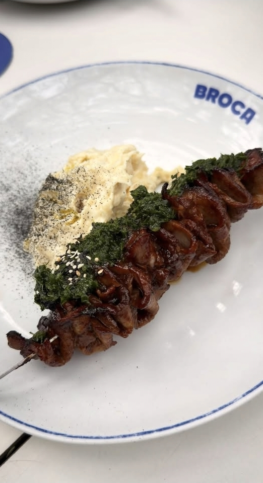
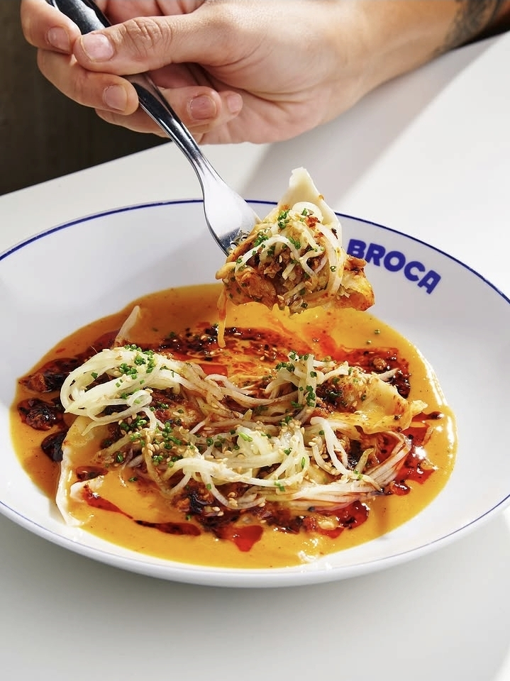
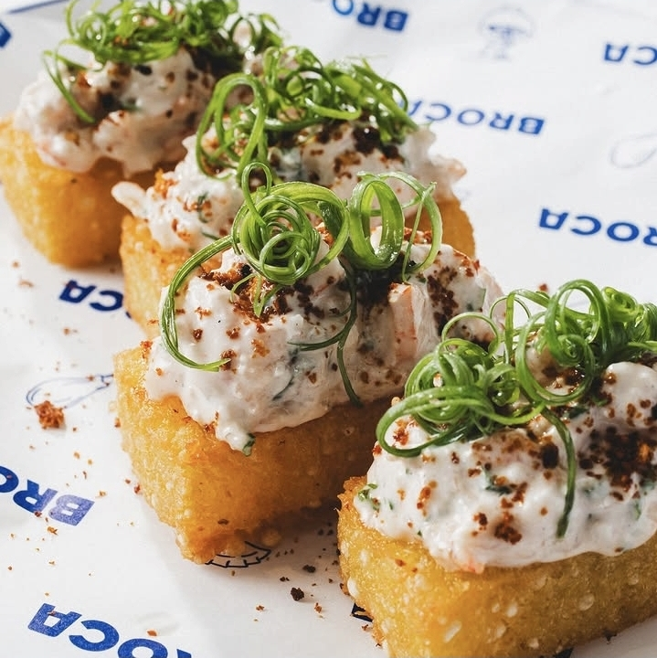
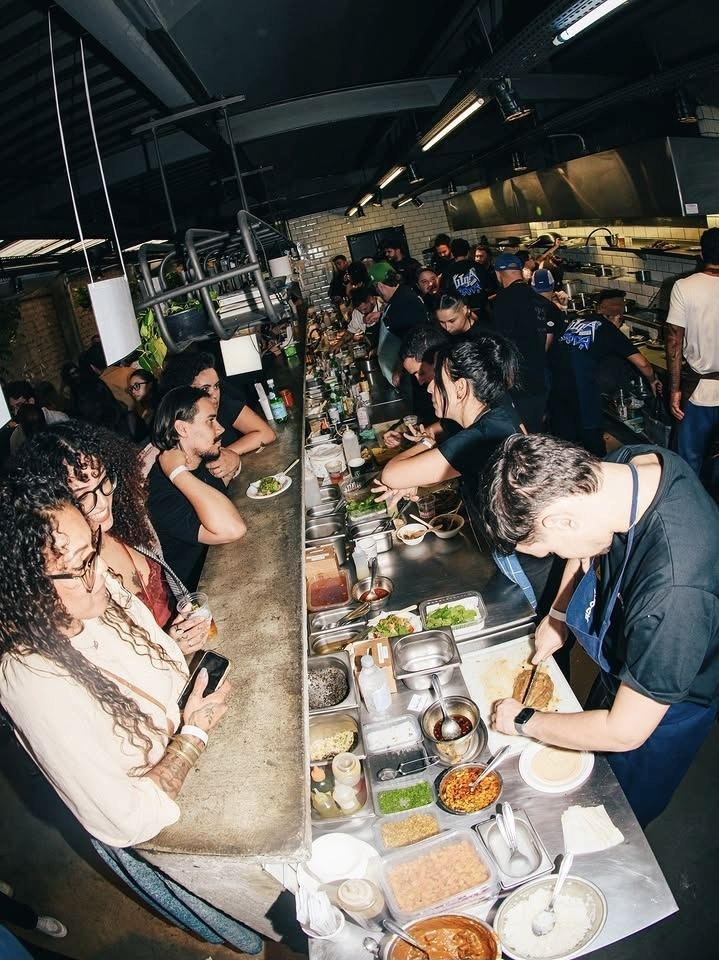

Qual é o restaurante
Na Rua Aspicuelta, no Alto de Pinheiros — colado à Vila Madalena —, o Broca nasceu com uma proposta que já virou marca registrada: "restaurante com jeitinho de bar". Salão externo intimista, pratos para compartilhar, drinks autorais e uma cozinha que mistura referências sem medo de errar a mão no tempero.
História
Aberto em 2024, o Broca é o primeiro restaurante autoral do chef Cadu Evangelisti, paulista que já vinha com bagagem — passagens por grandes restaurantes, buffets e hotéis — e visibilidade nacional: participou do The Taste Brasil (GNT, 2015) e foi vice-campeão do Top Chef Brasil em 2021, um dos favoritos da temporada. A casa cresceu tão rápido que, em dezembro de 2024, ganhou uma segunda unidade dentro do Santo Beco by Mannu Carvalho, em Trancoso (BA).
Conceito
Casualidade com qualidade técnica: essa é a proposta central. O Broca funciona como bar — ambiente pet friendly, área externa arborizada, até área para fumantes — mas entrega cozinha autoral, com influências que transitam entre a culinária mexicana, tailandesa e ingredientes brasileiros. O próprio restaurante brinca com o que não serve: "o que você não vai encontrar: risoto (e nunca vai ter), sushi (e o Cadu não é japonês), Coca-Cola (mas tem Pepsi)".
Chef e equipe
Cadu Evangelisti comanda a cozinha e é hoje uma das figuras mais visíveis da nova geração gastronômica de São Paulo — soma 76 mil seguidores no Instagram e é embaixador do S.Pellegrino Young Chef, um dos concursos mais relevantes do circuito internacional para chefs emergentes.
Pratos destaque
O cardápio é enxuto — mas criativo, segundo quem já visitou. Os itens mais citados por quem frequenta o Broca:

Espeto de língua na brasa, salsa anticuchera e chimichurri (R$ 48)

Wonton com chili oil bolonhesudo, talharim de nabo e gergelim

"Não é bobó": mandioca prensada, leite de coco, dendê e camarão (R$ 59)
O espeto de língua é a pedida mais citada por quem visita o Broca — item fixo do cardápio desde a abertura, mesmo com o menu passando por atualizações ao longo do tempo.
Ambiente e drinks
Despretensão com atenção ao detalhe: essa é a leitura mais comum de quem visita o Broca. Salão externo mais intimista, clima descontraído de bar, mas comida e drinks com nível de restaurante — o balcão costuma estar lotado, com a cozinha em ação à vista de quem está sentado ali.

Reconhecimento
- Vice-campeão do Top Chef Brasil (2021) — uma das temporadas mais assistidas do reality
- Embaixador do S.Pellegrino Young Chef, concurso internacional de peso para chefs emergentes
- Expansão de marca para Trancoso (BA) dentro de menos de um ano de operação em São Paulo — sinal de tração comercial forte
- Presença orgânica constante em conteúdo de criadores gastronômicos no Instagram e TikTok, com o "espetinho de língua" citado repetidamente como prato-símbolo da casa
"O que você não vai encontrar: risoto (e nunca vai ter), sushi (e o Cadu não é japonês), Coca-Cola (mas tem Pepsi)." Descrição oficial do Broca — BaresSP
Vale registrar também o contraponto: a Folha de S.Paulo, em avaliação citada por usuários do TripAdvisor, classificou o atendimento como "desatento e antipático, em descompasso com a qualidade da cozinha" — crítica que reforça um padrão comum em casas que crescem rápido: a cozinha entrega, mas o serviço às vezes não acompanha o ritmo da demanda.
Por quê é relevante agora
O Broca resume um movimento que vem ganhando força na gastronomia paulistana: a linha entre "bar" e "restaurante" cada vez mais tênue, com casas descontraídas entregando cozinha autoral de verdade — não apenas petisco de boteco. Com um chef de visibilidade nacional à frente, expansão já em curso para fora de São Paulo e presença orgânica forte nas redes, o Broca é hoje um dos nomes mais citados quando o assunto é "onde comer bem sem cerimônia" na região de Pinheiros/Vila Madalena.